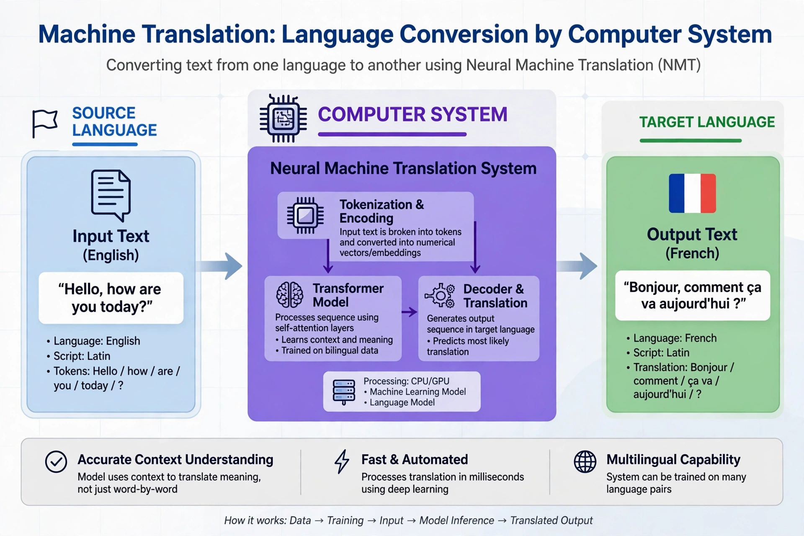

| Machine translation | |
|---|---|
| Field | Computational linguistics / NLP |
| First demo | Georgetown experiment, 1954 |
| Approaches | Rule-based, statistical, neural |
| Modern basis | Transformer neural networks |
Machine translation (MT) is the use of software to translate text or speech from one language into another. It is a central problem of natural language processing, and its history mirrors that of computing itself — from rule-based systems, through statistical methods, to today's neural models.

The idea predates the computer in the cryptographic analogies of Warren Weaver's 1949 memorandum. The Georgetown–IBM experiment of 1954 publicly translated Russian sentences into English using a hand-built vocabulary and six grammar rules, fuelling optimistic predictions. The ALPAC report of 1966 punctured that optimism and cut funding for a decade, but commercial rule-based systems such as SYSTRAN found niches, notably at the European Commission and in weather forecasting (the Canadian TAUM-METEO system).
Rule-based MT encodes dictionaries and grammar rules, transferring structure between languages. Statistical MT, developed from the late 1980s at IBM and dominant in the 2000s (Google Translate launched on it in 2006), learned correspondences from large parallel corpora. Neural MT, from about 2014–16, uses encoder–decoder networks with attention, and later the Transformer architecture, to translate whole sentences end-to-end; it produced a step change in fluency. Large language models have since further narrowed the gap with human translation for high-resource language pairs.
Automatic metrics such as BLEU estimate quality against human reference translations, though they correlate imperfectly with adequacy and fluency. Professional practice now often combines MT with human post-editing.
Natural language processing · Interpreting · Statistical machine translation · Neural machine translation